Bài 24: Định dạng có điều kiện
Bài 24: Định dạng có điều kiện
/en/excel/biểu đồ/nội dung/
Giới thiệu
Giả sử bạn có một bảng tính có hàng nghìn hàng dữ liệu. Sẽ cực kỳ khó để nhìn thấy các mô hình và xu hướng chỉ từ việc kiểm tra thông tin thô. Tương tự như biểu đồ và biểu đồ thu nhỏ,định dạng có điều kiệncung cấp cách trực quan hóa dữ liệu và làm cho bảng tính dễ hiểu hơn.
Xem video bên dưới để tìm hiểu thêm về định dạng có điều kiện trong Excel.
Hiểu định dạng có điều kiện
Định dạng có điều kiện cho phép bạn tự động áp dụng định dạng—chẳng hạn nhưmàu sắc,biểu tượngvàthanh dữ liệu—cho một hoặc nhiều ô dựa trênôgiá trị. Để thực hiện việc này, bạn cần tạo mộtđịnh dạng có điều kiệnquy tắc. Ví dụ: quy tắc định dạng có điều kiện có thể là:Nếu giá trị nhỏ hơn $2000, hãy tô màu đỏ cho ô. Bằng cách áp dụng quy tắc này, bạn có thể nhanh chóng xem ô nào chứa giá trị nhỏ hơn $2000.
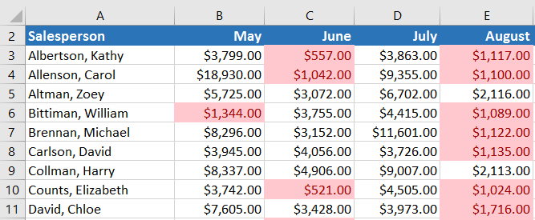
Để tạo quy tắc định dạng có điều kiện:
Trong ví dụ của chúng tôi, chúng tôi có một bảng tính chứa dữ liệu bán hàng và chúng tôi muốn xem nhân viên bán hàng nào đang đáp ứng mục tiêu bán hàng hàng tháng của họ. Mục tiêu bán hàng là $4000 mỗi tháng, vì vậy chúng tôi sẽ tạo quy tắc định dạng có điều kiện cho bất kỳ ô nào chứa giá trị cao hơn 4000.
- Chọnô mong muốncho quy tắc định dạng có điều kiện.
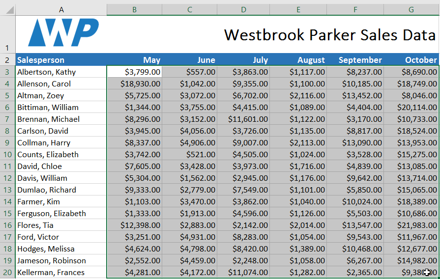
2. Từ tabTrang chủ, hãy nhấp vào lệnhĐịnh dạng có điều kiện. Một menu thả xuống sẽ xuất hiện. 3. Di chuột qualoại định dạng có điều kiệnmong muốn, sau đó chọnquy tắc mong muốntừ trình đơn xuất hiện. Trong ví dụ của chúng tôi, chúng tôi muốnđánh dấu các ôcó giá trịlớn hơn$4000.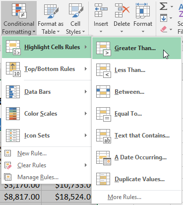
4. Một hộp thoại sẽ xuất hiện. Nhập(các) giá trị mong muốnvào trường trống. Trong ví dụ của chúng tôi, chúng tôi sẽ nhập 4000 làm giá trị của mình. 5. Chọnđịnh dạngkiểutừ trình đơn thả xuống. Trong ví dụ của chúng tôi, chúng tôi sẽ chọnTô màu xanh lục với văn bản màu xanh đậm, sau đó nhấp vàoOK.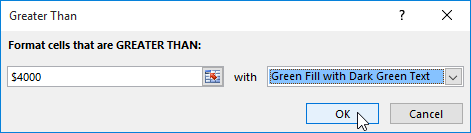
6. Định dạng có điều kiện sẽ được áp dụng cho các ô đã chọn. Trong ví dụ của chúng tôi, thật dễ dàng để biết nhân viên bán hàng nào đã đạt được mục tiêu doanh số 4000 USD mỗi tháng.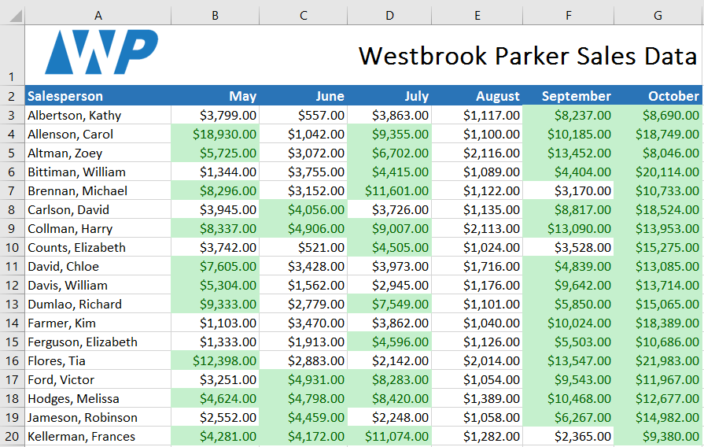
Bạn có thể áp dụng nhiều quy tắc định dạng có điều kiện cho một phạm vi ô hoặc bảng tính, cho phép bạn trực quan hóa các xu hướng và mẫu khác nhau trong dữ liệu của mình.
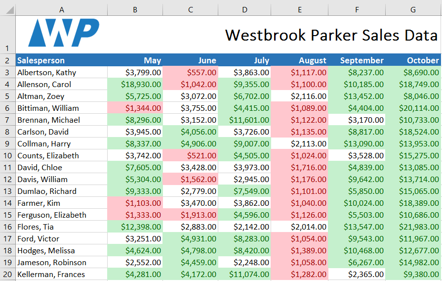
Cài đặt trước định dạng có điều kiện
Excel có một số kiểu được xác định trước—hoặcđặt trước—bạn có thể sử dụng để nhanh chóng áp dụng định dạng có điều kiện cho dữ liệu của mình. Chúng được nhóm thành ba loại:
- Thanh dữ liệulà các thanh ngang được thêm vào mỗi ô, giống nhưbiểu đồ thanh.
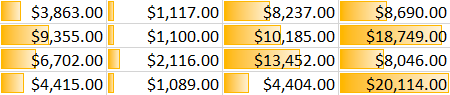
* Thang màuthay đổi màu của từng ô dựa trên giá trị của nó. Mỗi thang màu sử dụngchuyển màu hai hoặc ba màu. Ví dụ: trong thang màuXanh-Vàng-Đỏ, giá trịcao nhấtlà màu xanh lá cây, giá trịtrung bìnhlà màu vàng và giá trịthấp nhấtlà màu đỏ.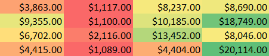
* Bộ biểu tượngthêm biểu tượng cụ thể vào từng ô dựa trên giá trị của nó.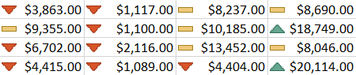
Để sử dụng định dạng có điều kiện đặt trước:
- Chọnô mong muốncho quy tắc định dạng có điều kiện.
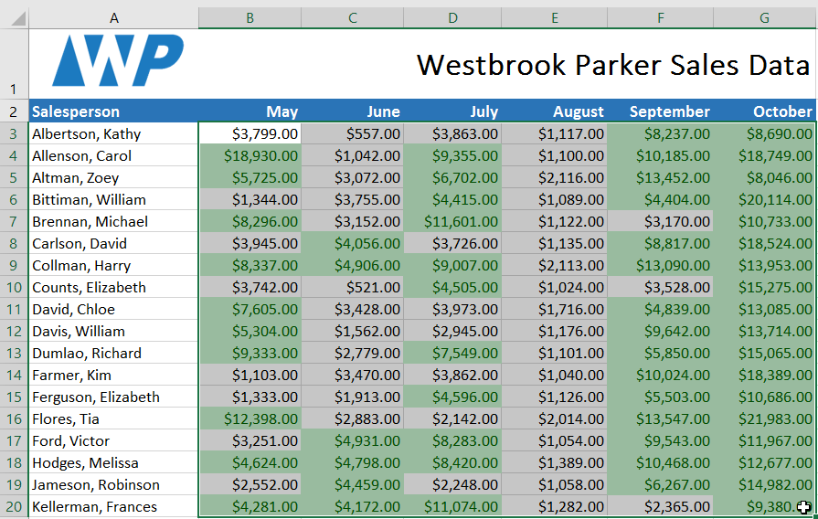
2. Nhấp vào lệnhĐịnh dạng có điều kiện. Một menu thả xuống sẽ xuất hiện. 3. Di chuột quagiá trị đặt trước mong muốn, sau đó chọnkiểu đặt trướctừ trình đơn xuất hiện.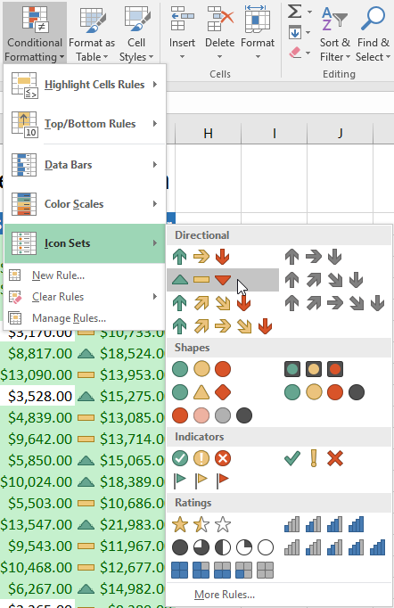
4. Định dạng có điều kiện sẽ được áp dụng cho các ô đã chọn.
Loại bỏ định dạng có điều kiện
Để loại bỏ định dạng có điều kiện:
- Nhấp vào lệnhĐịnh dạng có điều kiện. Một menu thả xuống sẽ xuất hiện.
- Di chuột quaXóa quy tắc, sau đó chọn quy tắc bạn muốn xóa. Trong ví dụ của chúng tôi, chúng tôi sẽ chọnXóa quy tắc khỏi toàn bộ trang tínhđể xóa tất cả định dạng có điều kiện khỏi trang tính.
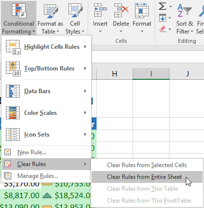
3. Định dạng có điều kiện sẽ bị loại bỏ.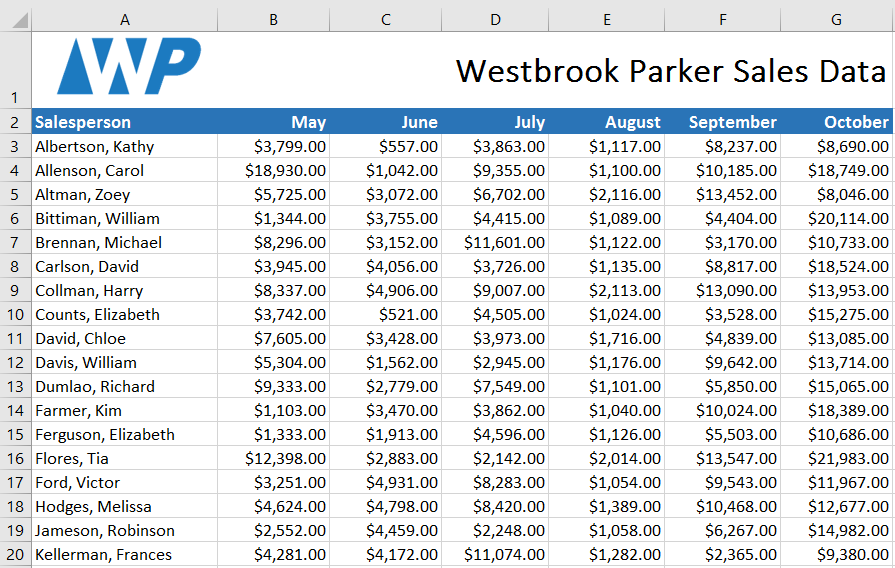
Nhấp vàoQuản lý quy tắcđể chỉnh sửa hoặc xóa các quy tắcriêng lẻ. Điều này đặc biệt hữu ích nếu bạn đã áp dụngnhiều quy tắccho một trang tính.
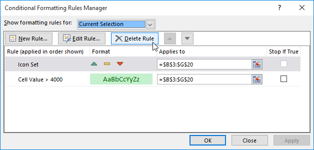
Thử thách!
- Mở sổ làm việc thực hành của chúng tôi.
- Nhấp vào tab bảng tínhThử tháchở phía dưới bên trái của bảng tính.
- Chọn ôB3:J17.
- Giả sử bạn là giáo viên và muốn dễ dàng xem tất cả các điểm dưới mức đạt. Áp dụngĐịnh dạng có điều kiệnsao cho nóĐánh dấu các ôchứa các giá trịNhỏ hơn 70vớimàu đỏ nhạt.
- Bây giờ bạn muốn xem các điểm so sánh với nhau như thế nào. Trong tabĐịnh dạng có điều kiện, chọnBộ biểu tượngcó tên là3 Biểu tượng (Khoanh tròn).Gợi ý: Tên của các bộ biểu tượng sẽ xuất hiện khi bạn di chuột qua chúng.
- Bảng tính của bạn sẽ trông như thế này:
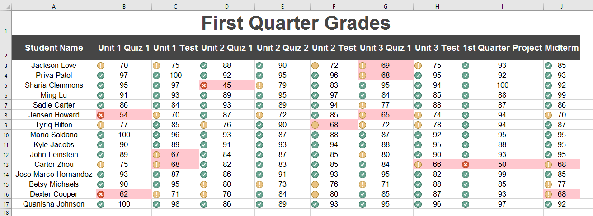
7. Sử dụng tính năng Quản lý quy tắc, xóamàu đỏ nhạtnhưng vẫn giữbộ biểu tượng./en/excel/comments-and-coauthoring/content/